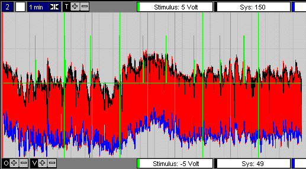

| |
MIDAC, rekenfunctie
42
|
|
|
INOS Analyse Protocol
|
|
Bloeddruk
variatie
Alle opnamen doorlopend, meen ik de volgende
algemene tendenzen waar te nemen:
-
bij de controlegroep lijkt de bloeddruk (zowel
diastole alsook systole) binnen 10 seconden na de stimulus eneigszins toe
te nemen
-
bij de controlegroep lijkt de bloeddruk ongeveer
15 seconden na de stimulus sterk af te nemen
-
bij de patienten lijken deze verschijnselen
niet of nauwelijks te constateren (hoewel er uitzonderingen zijn)
Wil je de opnamen op dezelfde manier bekijken,
volg dan het volgende recept:
-
plaats de bijgeleverde midac.exe en
midacexp.exe in de directory c:\data\~midorg\...
-
plaats het bijgeleverde analyse protocol (tevens
alternatief display protocol) inosdisp.ana in de directory c:\data\~midorg\protocol\polyscan\...
-
bekijk de gewenste opname
-
via de knop config nu het protocol
inosdisp.ana kiezen (formules vervangen)
Typisch voorbeeld uit de Referentie groep
(150102), met name bij stimulus 4 en 9 is een forse daling van de bloeddruk
te zien.

Uitvergroting van stimulus 4 (150102)
Noot: de getekende diastolische en systolische
bloeddruk ijlt 1 hartslag na (dit is noodzakelijk voor een goede detectie).

Typische patient (230101)
Patient (230103) met eveneens een sterke
bloeddruk daling, zoals bij de controle groep.
Uitvergroting van stimulus 4
© Copyright Instrumentele Dienst 1999
last updated 11-2-1999